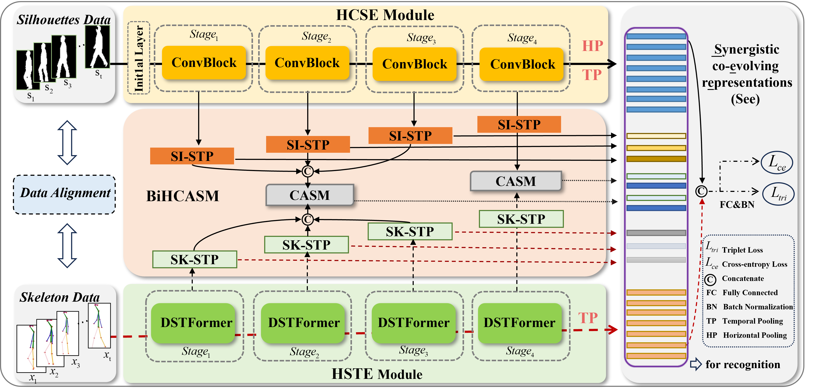
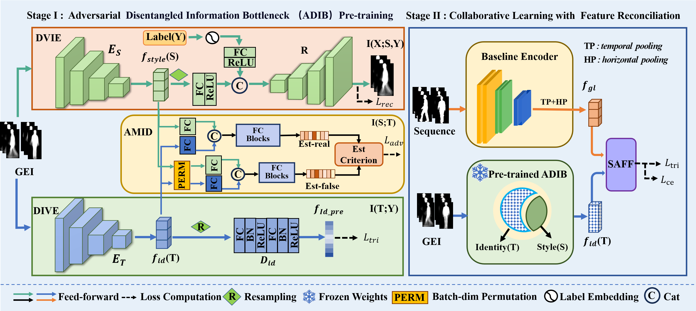

Ph.D. Student, School of Information Science and Engineering, Shandong University
Address: Qingdao, Shandong, China
Email: duhanyue349@163.com
I am currently a Ph.D. student in Artificial Intelligence at Shandong University. My research interests include gait recognition, computer vision, multimodal learning, and pattern recognition.

